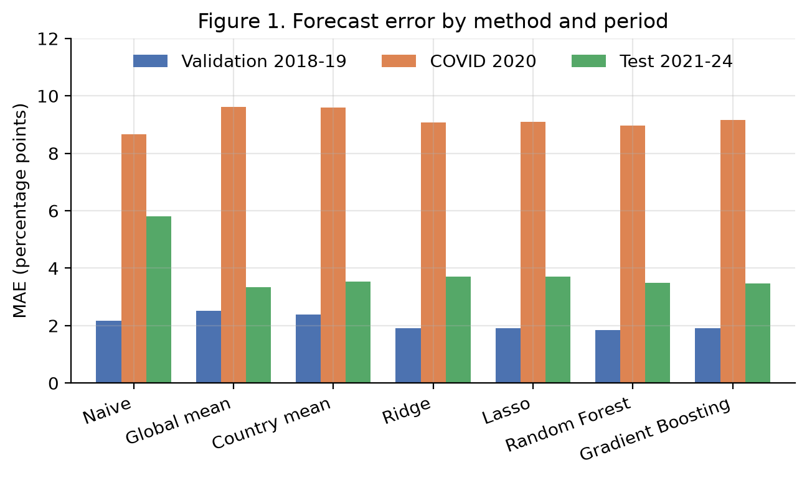
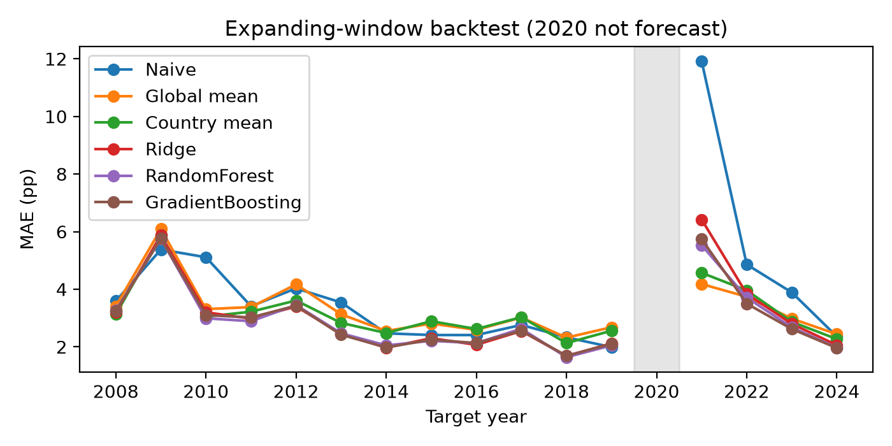
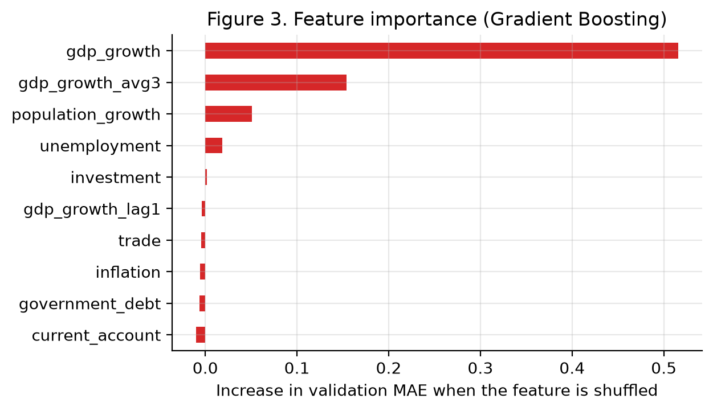
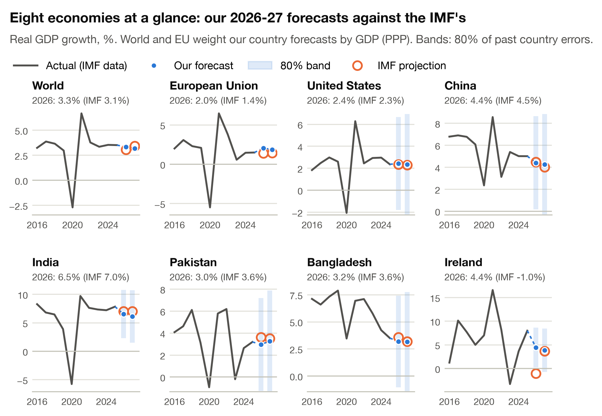

1The question
A growth forecast quietly shapes big decisions: budgets, interest rates, where a family's savings go. The IMF's World Economic Outlook is the reference forecast, built with expert judgement. We ask something narrower and testable: from this year's published indicators alone, can a model predict next year's real GDP growth better than simple benchmarks and the IMF? We score forecasts by mean absolute error (MAE) in percentage points, with RMSE as a second view.
2Data
We merged the World Bank World Development Indicators with the IMF World Economic Outlook (October 2026) into one panel: 217 economies, input years 2000-2023, next year's growth as the target, and eight indicators (Table 1). The data are uneven: investment is missing for 21% of rows and trade for 18%, mostly in small economies. Tails are heavy, with inflation up to 514%. This year's growth is the strongest single correlate of next year's (r = 0.21).
Table 1. The ten model features.
| Feature | Source |
|---|---|
| GDP growth, inflation, unemployment, trade, investment, population growth | World Bank |
| Government debt, current account | IMF |
| Last year's growth, 3-year average growth | Built from history |
3What others found
Chu and Qureshi (2023) ran a horse race of machine and deep learning methods for US GDP growth, with recursive out-of-sample evaluation over several sub-periods; we borrow that design for our backtest. Oo, Lin and Kakinaka (2025) apply machine learning to longer growth projections, which motivates our 2027 scenarios. Most such work studies one country; we pool 217 economies.
Parthiban: add two or three papers (crisis-period forecasting, cross-country panels), one sentence each on method and finding.
4How we built it
Leakage first. Splits follow the target year: training 2001-2017, validation 2018-2019, test 2021-2024, and 2020 alone as a COVID stress test.
Features. Eight indicators plus last year's growth and a three-year average give ten features. Gaps take the country's last earlier value, then the training median; features are clipped at training percentiles 1 and 99. A scikit-learn pipeline fits imputer and scaler on training rows only.
Models. Three benchmarks set the bar: naive persistence (next year equals this year), the global mean and each country's own mean. We fit Ridge for correlated indicators, Lasso for feature selection, Random Forest for non-linear effects, and Gradient Boosting with Huber loss to resist outliers, tuned on 2018-2019 and refit on 2001-2019.
Robustness. An expanding-window backtest re-forecasts every year from 2008 to 2024 from earlier data only, and a bootstrap over whole countries tests whether gaps are real.

5What happened
On validation every model beats every benchmark; Random Forest is best (MAE 1.85 against 2.16 for naive). The test years are humbler: the plain global mean (3.35) edges past Gradient Boosting (3.47).
The backtest explains why (Figure 2). Across 2008-2019 a model is the most accurate method in nine of twelve years, with MAE 2.80 against 3.11 for the best benchmark; the bootstrap interval excludes zero (-0.31 points, 95% CI -0.48 to -0.17). The test-period tie comes from one year, 2021. Random Forest and Gradient Boosting cannot be separated: the random seed alone moves Random Forest between 3.47 and 3.52. This year's growth carries most of the signal, and Lasso drops four indicators (Figure 3).
Farhana: add the IMF historical forecast comparison here (same rows, MAE) once the benchmark file is in the repo.
Table 2. MAE (percentage points); best in bold.
| Method | Val. 18-19 | Test 21-24 | Back. 08-19 |
|---|---|---|---|
| Naive | 2.16 | 5.81 | 3.28 |
| Global mean | 2.51 | 3.35 | 3.28 |
| Country mean | 2.38 | 3.54 | 3.11 |
| Ridge | 1.90 | 3.72 | 2.81 |
| Random Forest | 1.85 | 3.49 | 2.79 |
| Gradient Boosting | 1.90 | 3.47 | 2.80 |

6Where it breaks
Errors cluster at turning points. In 2021 the models trusted the 2020 collapse: for India they predicted about 1% growth when the economy grew 9.7%, while India's own average said 6.6%. Ireland fails differently: multinational accounting swung measured growth from 7.5% to -2.5% in 2023. Annual indicators capture momentum, not shocks.
Parthiban: add error by income group and region (models/outputs/predictions_all_models.csv).
Limitations: we use today's revised data, not what forecasters knew then; income groups are current; and annual data gives only about 3,500 training rows.

7Looking ahead
Our team comes from India, Pakistan and Bangladesh and studies in Ireland, so we ended where the data meets home. From real 2025 data, Gradient Boosting forecasts 2026 growth of 6.5% for India, 3.0% for Pakistan, 3.2% for Bangladesh and 4.4% for Ireland, close to the IMF except for Ireland (IMF: -1.0%; Figure 4). Weighted by GDP, our world forecast is 3.3% (IMF: 3.1%). 2027 needs assumed 2026 inputs, so the notebook exposes each assumption; a global slowdown cuts India's 2027 forecast from 6.1% to 4.5%. Past errors put an 80% band of about ±4 points around every number.

8Ethics and legal
Both datasets are public and aggregate, with no personal data, so GDPR does not apply; we credit the World Bank (CC BY 4.0) and follow the IMF's terms of use. The real risks are bias and false certainty. Data gaps fall hardest on low-income economies, where forecasts may matter most, so every forecast we report carries its error band and assumptions.
9Conclusion
Ten public indicators beat simple benchmarks by about 10% in ordinary years, but they cannot see turning points; in 2021 a plain average did better. The value is a transparent, checkable baseline with explicit assumptions. Next: real-time data vintages, leading indicators such as commodity prices, and quantile prediction intervals.
Code and data: github.com/farhana273/ml_assignment (notebook models/GDP_Models_Sami.ipynb)
References
- Chu, B. and Qureshi, S. (2023) Comparing out-of-sample performance of machine learning methods to forecast US GDP growth. Computational Economics, 62(4), 1567-1609.
- Oo, Z.M., Lin, C.Y. and Kakinaka, M. (2025) Deciphering long-term economic growth: an exploration with leading machine learning techniques. Journal of Forecasting, 44(4), 1531-1562.
- International Monetary Fund (2026) World Economic Outlook database, October 2026. data.imf.org/Datasets/WEO
- World Bank (2026) World Development Indicators. CC BY 4.0. datacatalog.worldbank.org/search/dataset/0037712
- Pedregosa, F. et al. (2011) Scikit-learn: machine learning in Python. Journal of Machine Learning Research, 12, 2825-2830.
- McKinney, W. (2010) Data structures for statistical computing in Python. Proceedings of the 9th Python in Science Conference, 56-61.